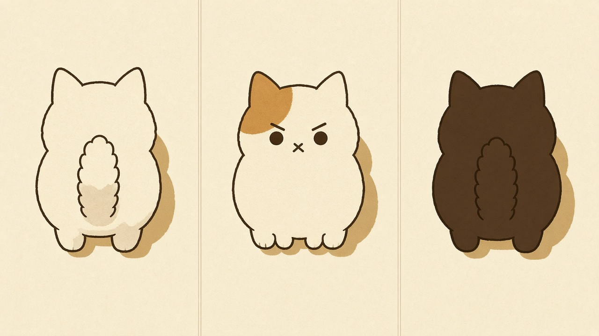
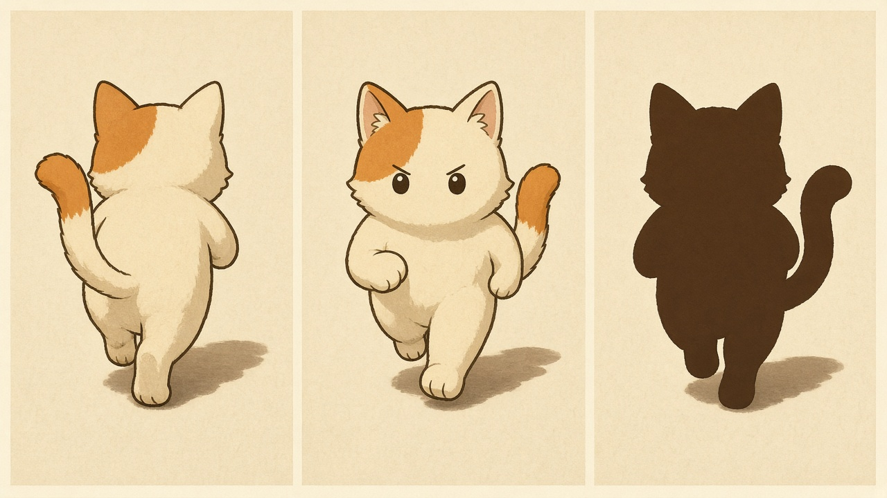
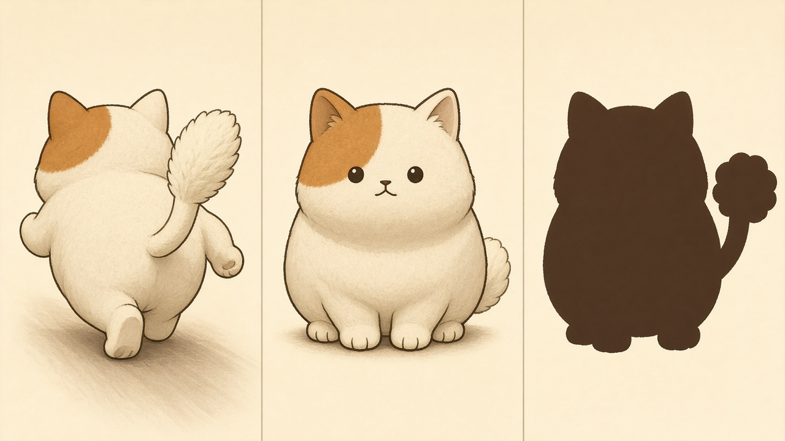
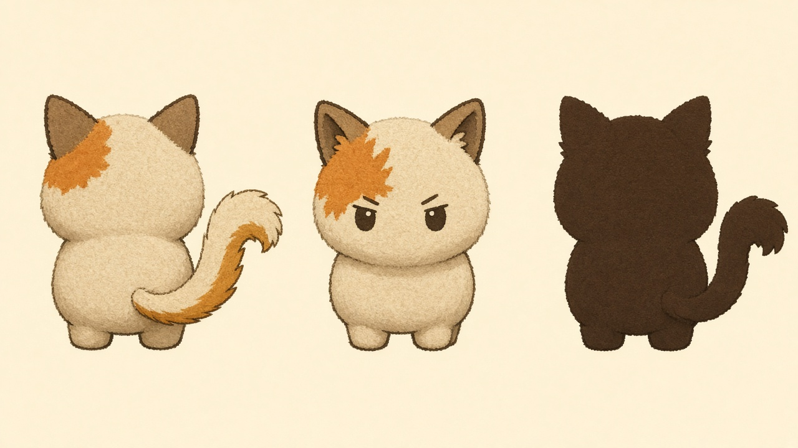
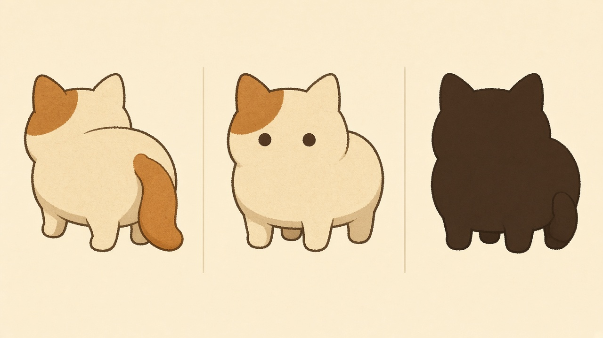
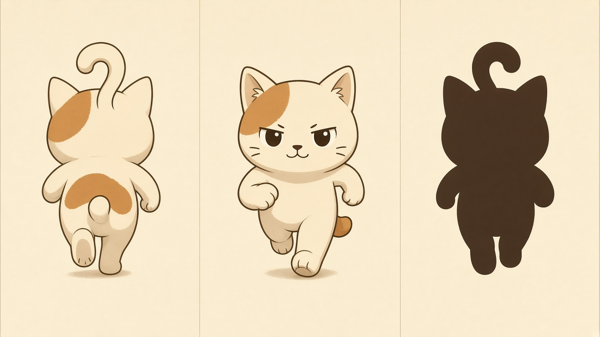

Master Cat concepts
Six cousins of one 2D cartoon cat, not six different heroes. Judge rear view first: that is the gameplay camera. Then front (icon), silhouette, and the 40–48 px samples on sand.
A — Pocket Loaf
Самый компактный. Большая голова, короткое тело, хвост как кисточка по центру. Характер: упрямый малыш, которого хочется провести ещё раз.

B — Garden Sprinter
Чуть длиннее корпус и явный шаг вперёд. Хвост — S-перо, сразу читается как хвост, не как пятно. Характер: живой бегун по садовой дорожке.

C — Dumpling
Самый круглый и тёплый. Хвост-одуванчик. Характер: милый через массу и короткие лапы. Сзади ближе к «сидит/стоит», чем к «бежит».

D — Stubborn Spark
Голова — главная масса. Хвост-флажок дугой вверх. Перед — самое «tap to start» лицо: сосредоточенные брови, без улыбки. Характер: жадина с характером.

E — Felt Mascot
Самый «вырезанный из фетра». Крупные простые объёмы, широкая спина под скины. Хвост с ножкой, не третья лапа. Характер: игрушечный талисман.

F — Corridor King
Самый sprite-like. Вопросительный хвост по центру спины, лёгкий наклон, седло под будущие окрасы. Характер: маскот раннера, которого сразу узнаёшь в коридоре.

Recommendation — not approved
F Corridor King is the strongest gameplay cat. Rear view already says “this cat is running forward”: head, ears, back, paws, and a real question-mark tail. The back still has room for skins. Front stays friendly without turning into generic kawaii.
B Garden Sprinter is the best runner motion and the most convincing tail. D Stubborn Spark is the best store-icon face. C Dumpling is the weakest rear for a runner — it reads more as a sitting toy.
Pick manually. Nothing is in the game.